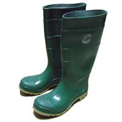

In 1958, English pictorial photographer Henry Peach Robinson created the world’s first photomontage by combining five different negatives to make one complete print of a young girl on her deathbed. “Fading Away”—Robinson’s first and most famous composite photo—depicts a young girl dying of consumption and was controversial when it was exhibited, with many believing it was not a suitable subject for photography.
The Barbie doll was invented in 1959 by Ruth Handler (co-founder of Mattel), whose own daughter was called Barbara. Barbie was introduced to the world at the American Toy Fair in New York City. Barbie's job was teenage fashion doll. The full name of the first doll was Barbie Millicent Roberts, from Willows, Wisconsin.
Lobsterman John Aldridge fell into the shark-infested water of Long Island while his crewmates were asleep. He was kept afloat for more than 12 hours by his rubber boots, which he used as flotation devices. The coast guard rescued him 43 miles south of Montauk where he fell off his vessel.

On the night of Aug 8, 1975, a line of people frantically piled sandbags atop Henan Province's Banqiao Dam while being battered by the worst storm ever recorded in the region. They were in a race with the rapidly rising Ru River to save the dam and the millions of people that lay sleeping downstream. It was a race they were about to lose.
Just after 1:00 am, the sky cleared and stars emerged from behind the storm clouds. There was an eerie calm as someone yelled, "The water level is going down! The flood is retreating!"
There was little chance to enjoy that calm. One survivor recalled that a few seconds later it "sounded like the sky was collapsing and the earth was cracking." The equivalent of 280,000 Olympic-sized swimming pools burst through the crumbling dam, taking with it entire towns and as many as 171,000 lives.